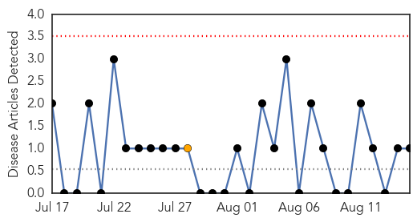
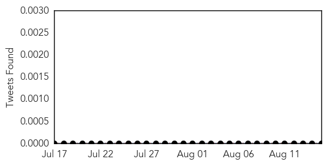
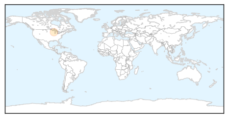
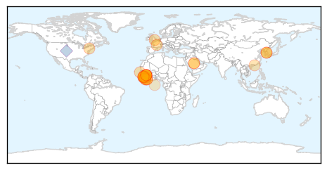
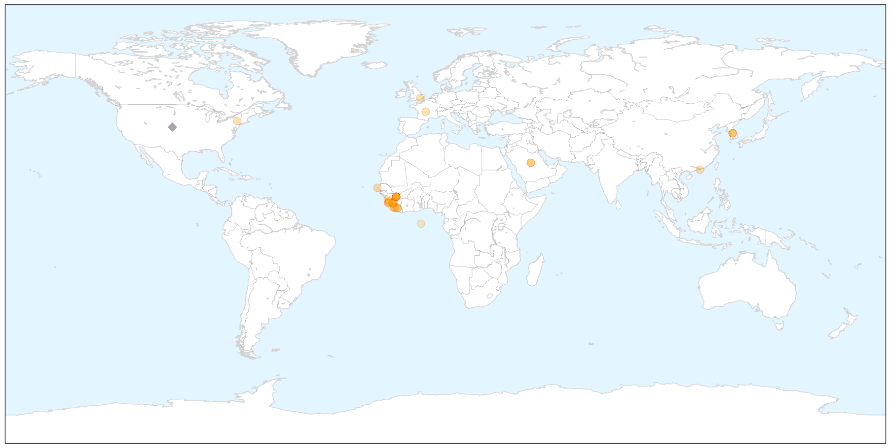

Mold/Fungal
30-Day Web Trend
0 alerts, 1 warnings

30-Day Twitter Trend
0 alerts, 0 warnings

Article Locations

Article Confidences

Top Articles:
Top Tweets:
-
No tweets found for Aug 15, 2015
Ebola
30-Day Web Trend
1 alerts, 0 warnings

30-Day Twitter Trend
0 alerts, 0 warnings

Article Locations

X

Article Confidences

Top Articles:
- 1.000
- Is the Ebola Epidemic Officially Over?
- 0.999
- Guinea Plans Ebola Inoculation Campaign After Vaccine Success
- 0.999
- Another Sierra Leonean doctor infected with Ebola
- 0.998
- Newly Developed Ebola Virus Vaccine 'Highly Effective'
- 0.997
- World Health Organization Reports 100 Percent Success on Ebola Vaccine Testing
- 0.988
- Senegal Still Vigilant Against Ebola
- 0.987
- U.N. official: Ebola epidemic could be defeated by end of 2015
- 0.987
- Sierra Leone ends Ebola quarantine for 500 villagers
- 0.986
- Sierra Leone ends Ebola quarantine for 500
- 0.978
- Sierra Leone ends Ebola quarantine for 500 villagers
- 0.978
- "We can be proud that the international community rallied to support the efforts to defeat Ebola."
- 0.975
- Philstar Mobile
- 0.963
- Sierra Leone Lifts Last Major Ebola Quarantine As Cases Recede
- 0.958
- Sierra Leone lifts last major Ebola quarantine as cases recede
- 0.951
- Sierra Leone lifts last major Ebola quarantine as cases recede
- 0.951
- P4DP Launches Study on Role of Liberia’s Traditional Healers
- 0.947
- KSA can use space technology to prevent Ebola, says expert
- 0.935
- KSA can use space technology to prevent Ebola, says expert
- 0.918
- Sierra Leone: Sierra Leone ends Ebola quarantine for 500 villagers
- 0.912
- In Sierra Leone, hope and challenges as quarantine camp closes
- 0.898
- The Vineyard Gazette - Martha's Vineyard News
- 0.879
- Africa Urged To Take Lead In Addressing Ebola Challenges
- 0.874
- In Sierra Leone, hope and challenges as quarantine camp closes - Sierra Leone
- 0.869
- World Bank Regional Director Pays Courtesy Call on President Koroma
- 0.809
- Mamusa Declaration marks end of ebola in PortLoko
- 0.769
- ACF ends 8-month Ebola prevention, response project in Bomi
- 0.744
- Sierra Leone lifts last major Ebola quarantine as cases recede
- 0.717
- President places Sierra Leone on permanent state of emergency – says SLPP John Benjamin
- 0.693
- Ebola Patient Dr. Kent Brantly Arrives at US Hospital From Liberia
- 0.620
- PROMOTING ACCESS TO INFORMATION… Dr. Tarawally Donates To Bintumani Radio
- 0.547
- Sierra Leone initiates move to lift ban on pilgrims
Top Tweets:
- 0.916
- What World Health Organization Did Wrong On Ebola Response - Daily Signal http://t.co/maaRRQhvoE ebola EVD
- 0.615
- What World Health Organization Did Wrong On Ebola Response http://t.co/TiDcntWrun
- 0.576
- What World Health Organization Did Wrong On Ebola Response - Daily Signal http://t.co/6tDdK3Emwz
- 0.533
- Ebola crisis was not a financial crisis for Dallas area taxpayers - Dallas Morning News http://t.co/gfVAUEVpHd ebola EVD
- 0.525
- Sierra Leone lifts last major Ebola quarantine http://t.co/OPDK7ZbWVw
- 0.509
- Some Ebola Survivors Still Suffer—And Doctors Don't Know Why - Wired http://t.co/qvRGVRdiGd ebola EVD